FAIR Simple Scalable Static Research Data Repository
2019-11-05
This presentation was given by Peter Sefton & Michael Lynch at the eResearch Australasia 2019 Conference in Brisbane, on the 24th of October 2019.
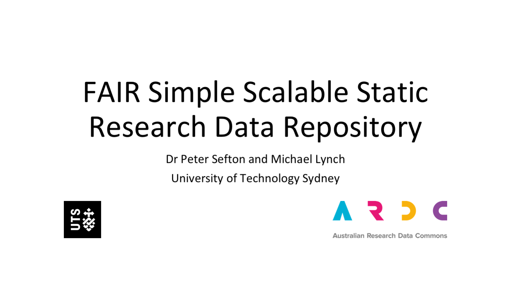
Welcome - we’re going to share this presentation. Peter/Petie will talk through the two major standards we’re building on, and Mike will talk about the software stack we ended up with.
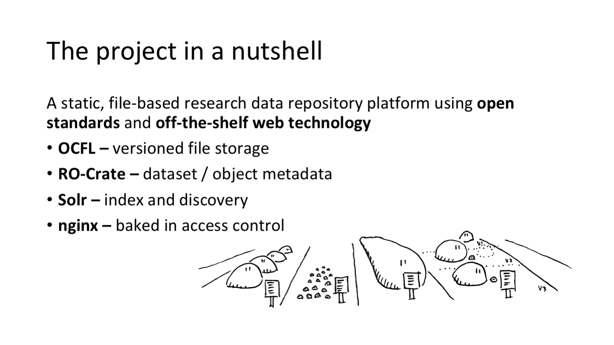
' title='The project in a nutshell A static, file-based research data repository platform using open standards and off-the-shelf web technology OCFL – versioned file storage RO-Crate – dataset / object metadata Solr – index and discovery nginx – baked in access control' border='1' width='85%'/>
This project is about building highly scalable research data repositories quickly, cheaply and above all sustainably by using Standards for organizing and describing data.
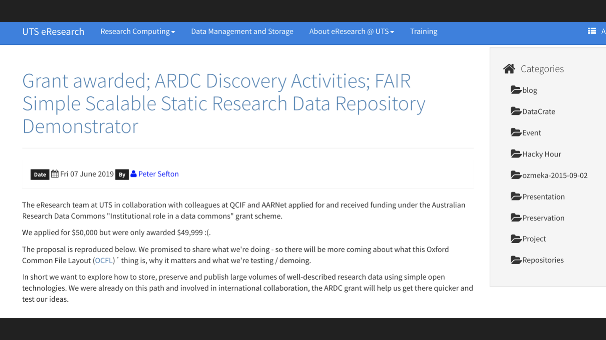
' title='' border='1' width='85%'/>
We had a grant to continue our OCFL work from the Australian Research Data Commons. (I’ve used the new Research Organisation Registry (ROR) ID for ARDC, just because it’s new and you should all check out the ROR).
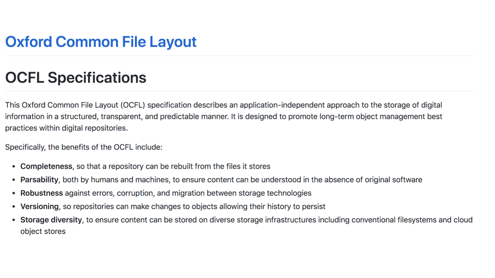
' title='' border='1' width='85%'/>
OCFL Specifications
This Oxford Common File Layout (OCFL) specification describes an application-independent approach to the storage of digital information in a structured, transparent, and predictable manner. It is designed to promote long-term object management best practices within digital repositories. Specifically, the benefits of the OCFL include:
Completeness, so that a repository can be rebuilt from the files it stores
Parsability, both by humans and machines, to ensure content can be understood in the absence of original software
Robustness against errors, corruption, and migration between storage technologies
Versioning, so repositories can make changes to objects allowing their history to persist
Storage diversity, to ensure content can be stored on diverse storage infrastructures including conventional filesystems and cloud object stores
Source: https://ocfl.io
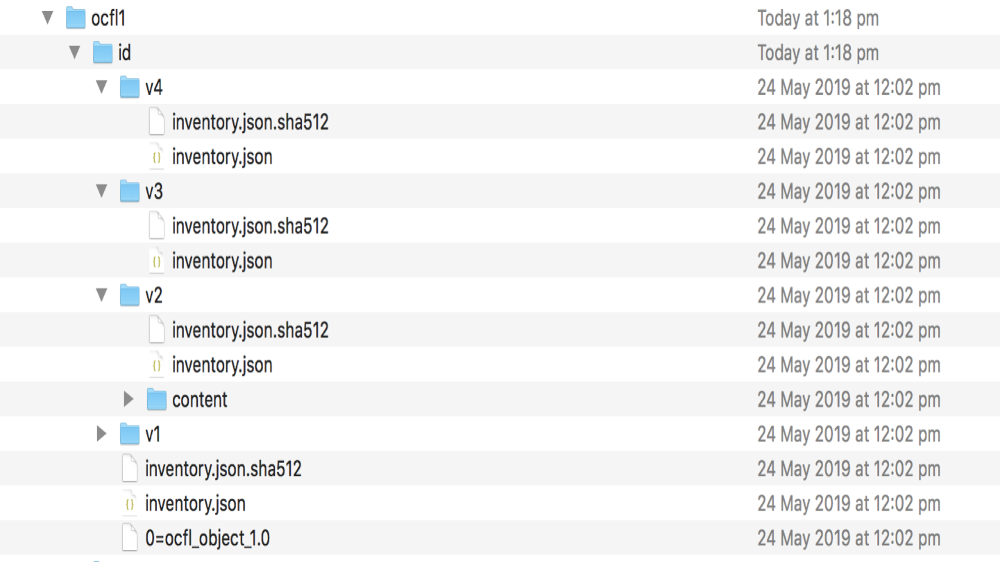
Here’s a screenshot of what an OCFL object looks like - it’s a series of versioned directories, each with a detailed inventory.
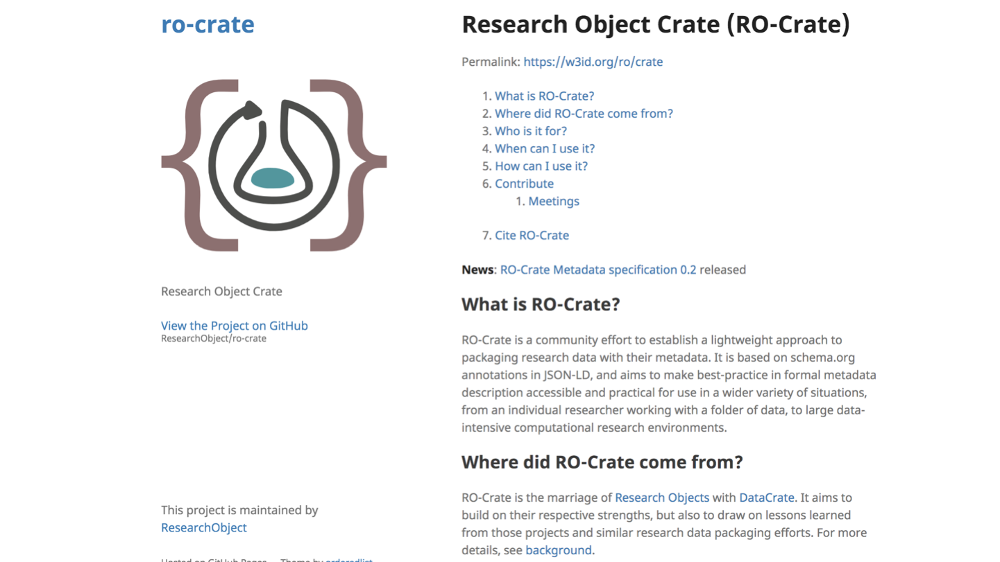
' title='' border='1' width='85%'/>
One of the standards we are using is RO-Crate - for describing research data sets. I presented this at eResearch as well [TODO - link]
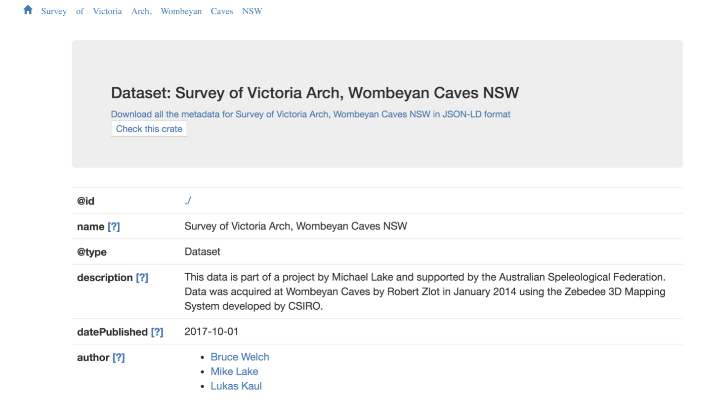
' title='' border='1' width='85%'/>
This is an example of an RO-Crate showing that each Crate has a human-readable HTML view as well as a machine readable view.
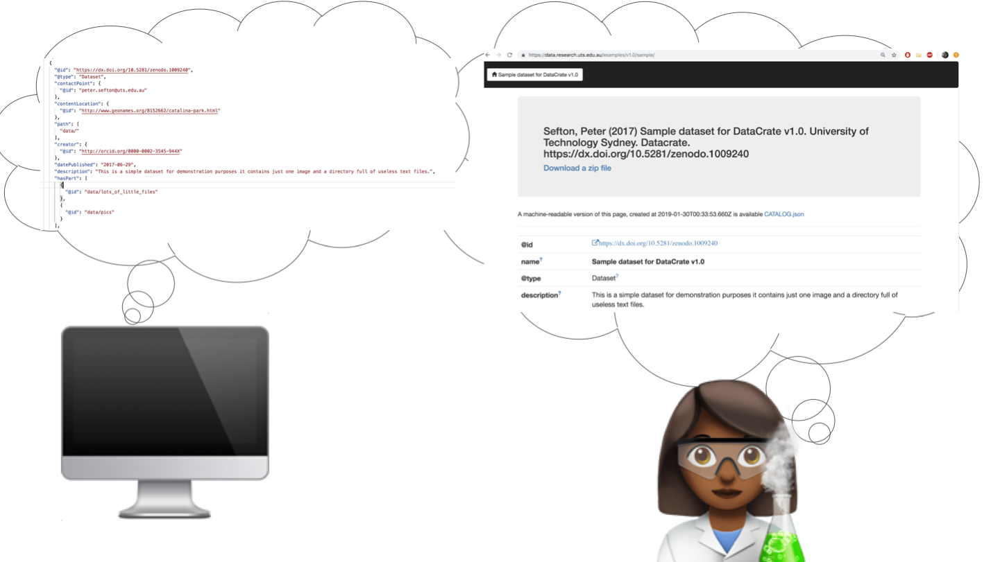
🖥️ 👩🏾🔬 ' title='🖥️ 👩🏾🔬 ' border='1' width='85%'/>
The two views (human and machine) of the data are equivalent - in fact the HTML version is generated from the JSON-LD version using a tool called CalcyteJS.
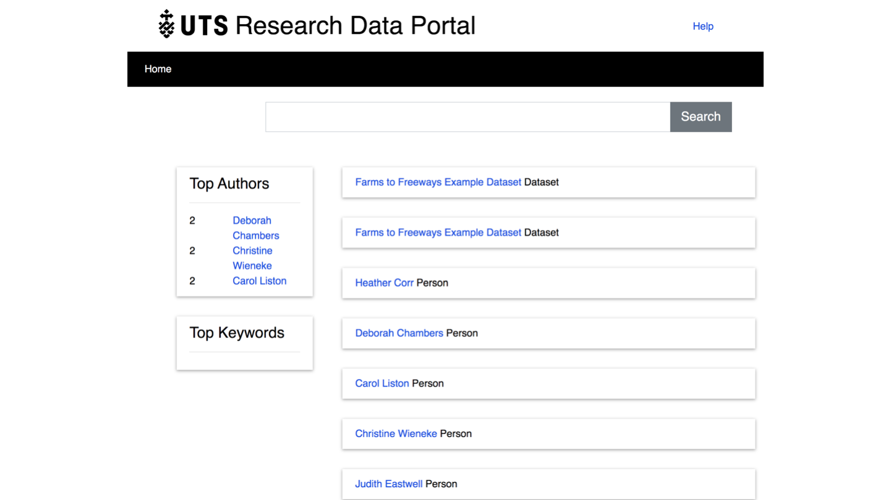
' title='' border='1' width='85%'/>
This is a screenshot of work very much in progress - it’s a shows an example of the repository system working at the smallest scale, showing a single collection, “Farms to Freeways”; a social history project from Western Sydney, which we have exported into RO-Crate format as a demonstration. Each of the participants has been indexed for discovery. In a more deployment for a institutional repository, datasets would be indexed at the top level only. The point is to show that this software will be highly configurable.
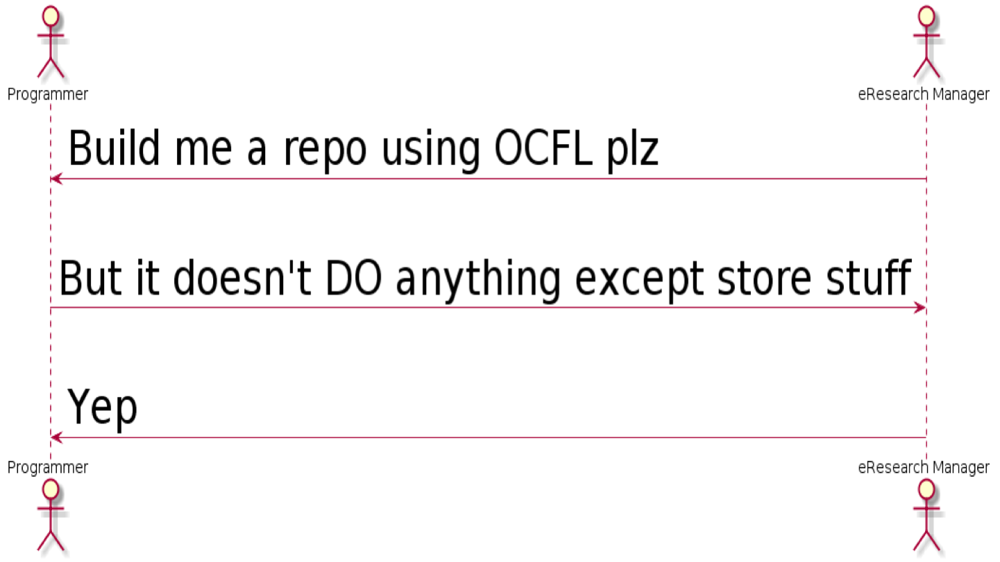
' title='' border='1' width='85%'/>
OCFL needs some explaining. I’ve had a couple of conversations with developers where it takes them a little while to get what it’s for.
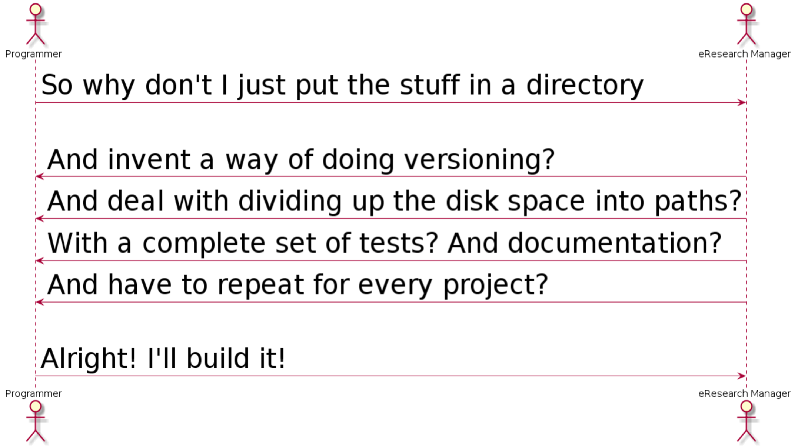
' title='' border='1' width='85%'/>
But they DO get it the standard is well designed.
' border='1' width='85%'/>
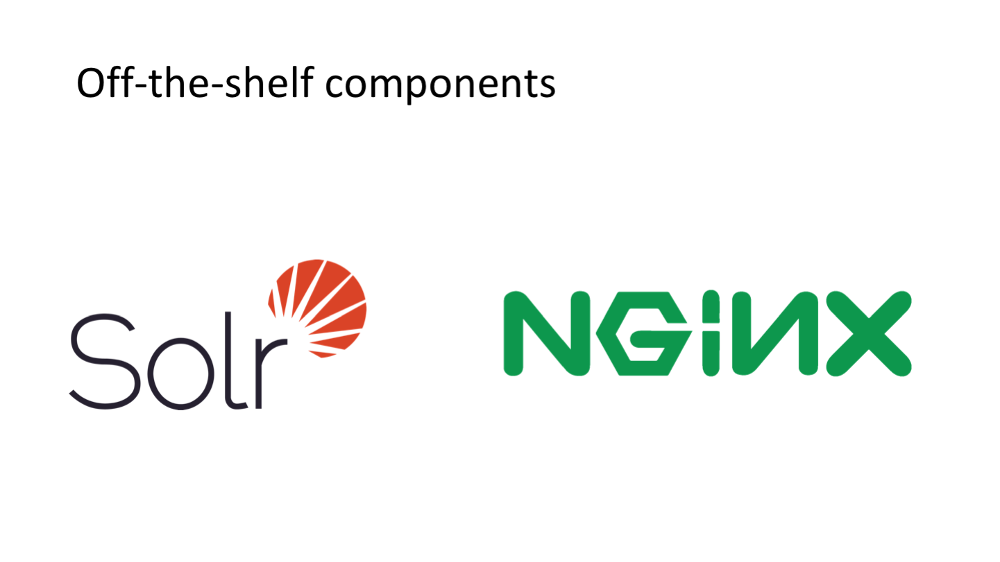
' title='Off-the-shelf components' border='1' width='85%'/>
Solr is an efficient search engine.
nginx is an industry-standard scalable web server, used by companies like DropBox and Netflix
Both are standard, open-source, easy to deploy and keep patched: unlike dedicated data repositories, which tend be fussy and make your server team swear.
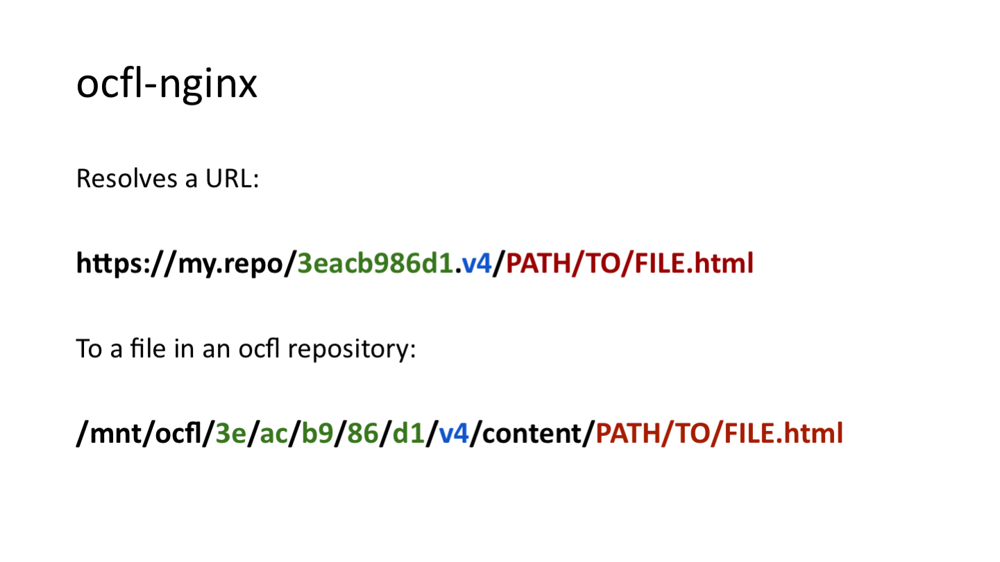
https://my.repo/3eacb986d1.v4/PATH/TO/FILE.htmlTo a file in an ocfl repository:
/mnt/ocfl/3e/ac/b9/86/d1/v4/content/PATH/TO/FILE.html
' title='ocfl-nginx Resolves a URL:
https://my.repo/3eacb986d1.v4/PATH/TO/FILE.html
To a file in an ocfl repository:
/mnt/ocfl/3e/ac/b9/86/d1/v4/content/PATH/TO/FILE.html
' border='1' width='85%'/>
Mapping incoming URLs to the right file in the ocfl repository is straightforward and done with an extension in nginx’s minimal flavour of JavaScript. This slide simplifies things a bit: in real life we have URL ids which solr maps to OIDs and then to a pairtree path.
Todo: we want to use the Memento standard so that clients can request versioned rsources.
We are also looking at versioned DOIs pointing to versioned URLs and resources
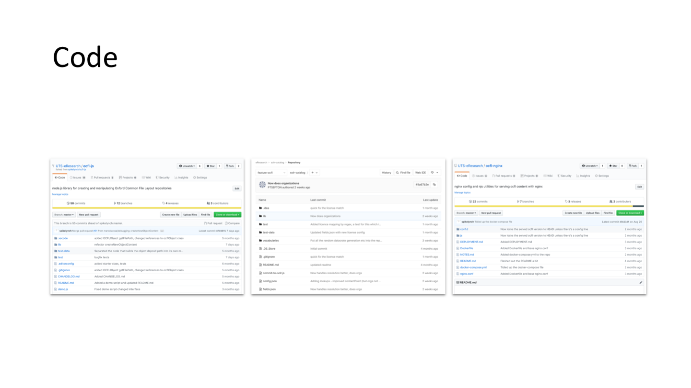
' title='Code' border='1' width='85%'/>
ocfl-js - a Node library for building and updating OCFL repositories ro-crate-js - a Node library for working with RO-Crates ocfl-nginx - an extension to nginx allowing it to serve versioned OCFL content a Docker image for ocfl-nginx solr-catalog - a Node library for indexing an OCFL repository into a Solr index data-portal - a single-page application for searching a Solr index
The codebase is in a lot of places but that’s consistent with the approach - they are all just components which we can deploy as we need them
The nginx extension is very small and would be easy to reimplement against another server
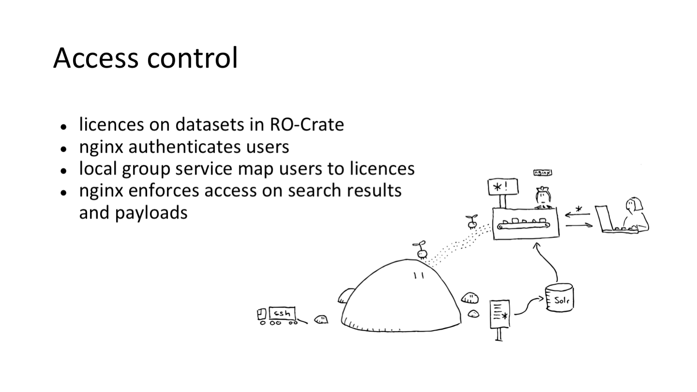
This is the most prototypical / primitive part of what we’ve got so far.
Licences on RO-Crate are indexed in the solr index. nginx authenticates web users, looks up which licences they can access, and applies access control to both search results and payloads.
At the moment, we’ve got a test server which doesn’t authenticate but which only serves datasets with a public licence and denies access to everything else.
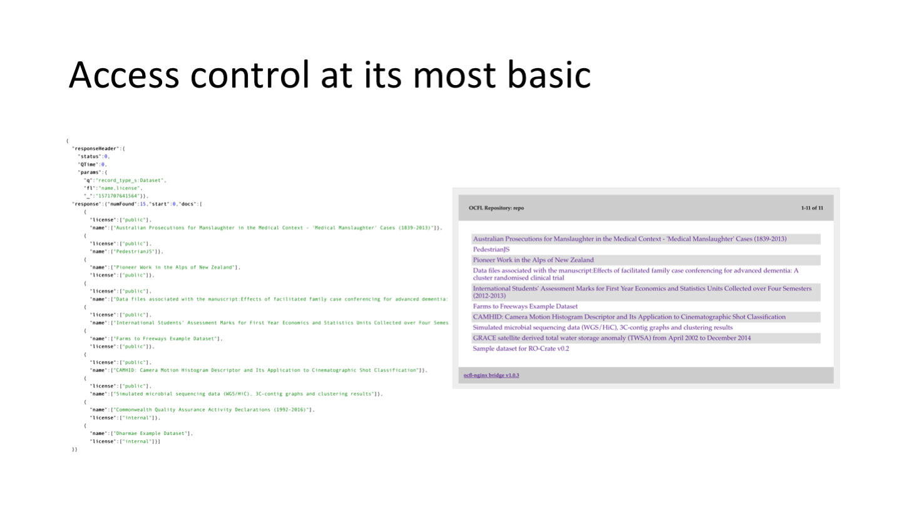
' title='Access control at its most basic' border='1' width='85%'/>
The screenshot on the left is a Solr query showing public and internal licences
The screenshot on the right is a basic web view of what nginx serves to an unauthenticated guest user - datasets with internal licenses aren’t shown
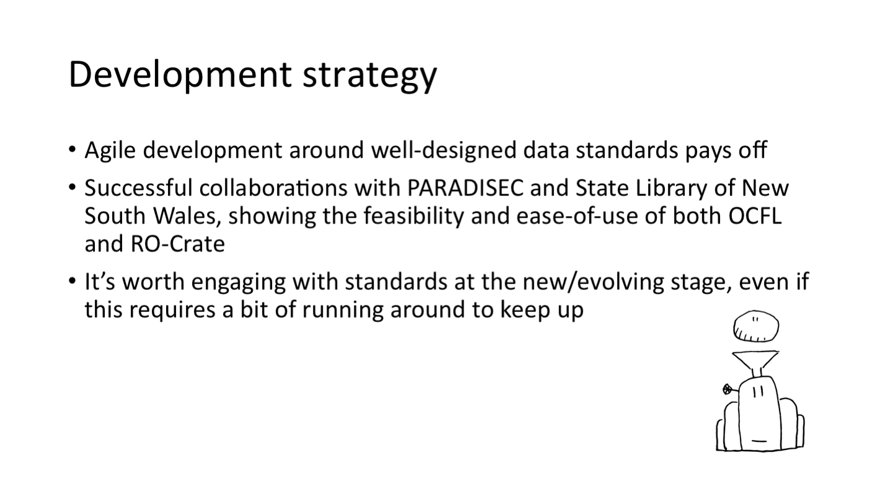
' title='Development strategy Agile development around well-designed data standards pays off Successful collaborations with PARADISEC and State Library of New South Wales, showing the feasibility and ease-of-use of both OCFL and RO-Crate It’s worth engaging with standards at the new/evolving stage, even if this requires a bit of running around to keep up' border='1' width='85%'/>
Good data standards make incremental development much easier.
We were able to get real results in one- and two-day workshops with teams from PARADISEC and the State Library of New South Wales, both with large, structured digital humanities collections behind APIs.
Both the OCLF and RO-Crate standards are new and changing, but agile development means that it’s OK and even productive to keep pace with this and feed back into community consultation.
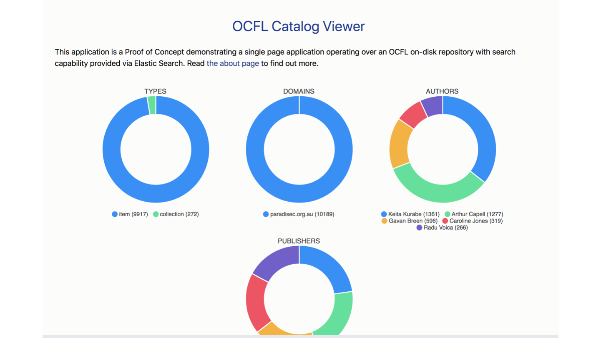
' title='' border='1' width='85%'/>
In the last couple of months Marco La Rosa, an independent developer working for PARADISEC, has ported 10,000 data and collection items into RO-Crate format, AND built a portal which can display them. This means that ANY repository with a similar structure Items in Collections could easily re-use the code and the viewers for various file types.
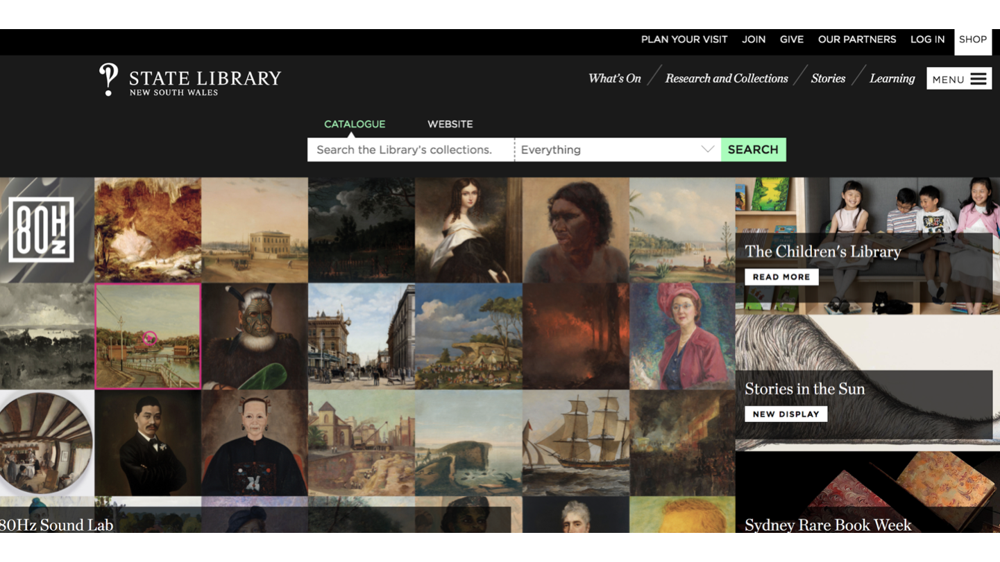
' title='' border='1' width='85%'/>
The Mitchell Collection - digitised public domain books with detailed metadata in METS and specialised OCR standards. We spend a day at the State Library and were able to successfully extract books into directories of JPEGs and metadata, package these using RO-Crate and start building an OCFL repository.
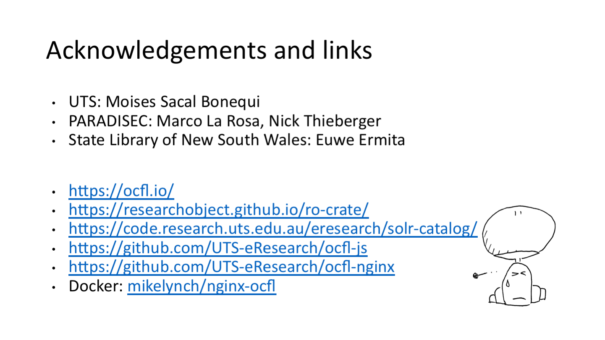
https://ocfl.io/ https://researchobject.github.io/ro-crate/ https://code.research.uts.edu.au/eresearch/solr-catalog/ https://github.com/UTS-eResearch/ocfl-js https://github.com/UTS-eResearch/ocfl-nginx Docker: mikelynch/nginx-ocfl' title='Acknowledgements and links UTS: Moises Sacal Bonequi PARADISEC: Marco De La Rosa, Nick Thieberger State Library of New South Wales: Euwe Ermita
https://ocfl.io/ https://researchobject.github.io/ro-crate/ https://code.research.uts.edu.au/eresearch/solr-catalog/ https://github.com/UTS-eResearch/ocfl-js https://github.com/UTS-eResearch/ocfl-nginx Docker: mikelynch/nginx-ocfl
' border='1' width='85%'/>

This work is licensed under a Creative Commons Attribution 3.0 Australia License.